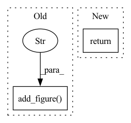

Pattern ID :31652

Before Change
// log prediction figure
if batch_idx % self.hparams.log_interval == 0:
fig = self.plot_prediction(y_all[0], y_hat[0].detach().cpu()) // first in batch
self.logger.experiment.add_figure(
"Training prediction", fig, global_step=self.global_step,
)
return {
"loss": loss,
"log": tensorboard_logs,
"interpretation": interpretation,
After Change
return torch.optim.Adam(self.parameters(), lr=self.hparams.learning_rate)
def training_step(self, batch, batch_idx):
return self._step(batch, batch_idx, label="train", log_batch_idx=False)
def on_after_backward(self):
if self.global_step % self.hparams.log_interval == 0 and self.hparams.log_interval > 0:
In pattern: SUPERPATTERN
Frequency: 3
Non-data size: 2
Instances
Fragment ID: 92292692
Project Name: jdb78/pytorch-forecasting
Commit Name: 1806e120498ddea1f0e04db08f8249ebe0b217b1
Time: 2020-06-20
Author: beitner.jan@bcg.com
File Name: temporal_fusion_transformer_pytorch/model/__init__.py
M Class Name: TemporalFusionTransformer
N Class Name: TemporalFusionTransformer
M Method Name: training_step(3)
N Method Name: training_step(3)
M Parent Class: pl.LightningModule
N Parent Class: pl.LightningModule
M File Name: temporal_fusion_transformer_pytorch/model/__init__.py
N File Name: temporal_fusion_transformer_pytorch/model/__init__.py
M Start Line: 395
M End Line: 415
N Start Line: 372
N End Line: 372
'>
Before Change
ax[1].axis("off")
plt.show()
writer.add_figure("Image revelation", fig, epoch)
def stego_loss(secret, cover, container, revealed, beta):
loss_cover = F.mse_loss(cover, container)
After Change
ax[1].axis("off")
plt.show()
return fig
def stego_loss(secret, cover, container, revealed, beta):
'>
Fragment ID: 92292693
Project Name: margaritageleta/pixinwav
Commit Name: 8bed61b4f8650b3e3d1a577a475faa91b0eaa360
Time: 2021-02-13
Author: noticiasmundiales99@gmail.com
File Name: src/trainer.py
M Class Name: AnonimousClass
N Class Name: AnonimousClass
M Method Name: compare_images(2)
N Method Name: compare_images(3)
M Parent Class:
N Parent Class:
M File Name: src/trainer.py
N File Name: src/trainer.py
M Start Line: 32
M End Line: 45
N Start Line: 37
N End Line: 37
'>
Before Change
// log prediction figure
if batch_idx % self.hparams.log_interval == 0:
fig = self.plot_prediction(y_all[0], y_hat[0].detach().cpu()) // first in batch
self.logger.experiment.add_figure(
f"Validation prediction of item 0 in batch {batch_idx}", fig, global_step=self.global_step,
)
return log
def validation_epoch_end(self, outputs):
// loss logging
After Change
return self._epoch_end(outputs, label="train")
def validation_step(self, batch, batch_idx):
return self._step(batch, batch_idx, label="val", log_batch_idx=True)
def validation_epoch_end(self, outputs):
return self._epoch_end(outputs, label="val")
'>
Fragment ID: 92292694
Project Name: jdb78/pytorch-forecasting
Commit Name: 1806e120498ddea1f0e04db08f8249ebe0b217b1
Time: 2020-06-20
Author: beitner.jan@bcg.com
File Name: temporal_fusion_transformer_pytorch/model/__init__.py
M Class Name: TemporalFusionTransformer
N Class Name: TemporalFusionTransformer
M Method Name: validation_step(3)
N Method Name: validation_step(3)
M Parent Class: pl.LightningModule
N Parent Class: pl.LightningModule
M File Name: temporal_fusion_transformer_pytorch/model/__init__.py
N File Name: temporal_fusion_transformer_pytorch/model/__init__.py
M Start Line: 431
M End Line: 443
N Start Line: 382
N End Line: 382